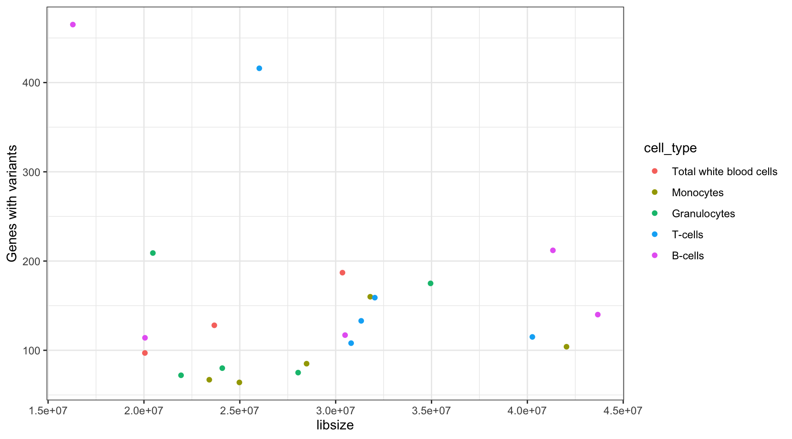

Leucegene Normals
Last updated: 2020-07-07
Checks: 7 0
Knit directory: MINTIE-paper-analysis/
This reproducible R Markdown analysis was created with workflowr (version 1.4.0). The Checks tab describes the reproducibility checks that were applied when the results were created. The Past versions tab lists the development history.
Great! Since the R Markdown file has been committed to the Git repository, you know the exact version of the code that produced these results.
Great job! The global environment was empty. Objects defined in the global environment can affect the analysis in your R Markdown file in unknown ways. For reproduciblity it’s best to always run the code in an empty environment.
The command set.seed(20200415) was run prior to running the code in the R Markdown file. Setting a seed ensures that any results that rely on randomness, e.g. subsampling or permutations, are reproducible.
Great job! Recording the operating system, R version, and package versions is critical for reproducibility.
Nice! There were no cached chunks for this analysis, so you can be confident that you successfully produced the results during this run.
Great job! Using relative paths to the files within your workflowr project makes it easier to run your code on other machines.
Great! You are using Git for version control. Tracking code development and connecting the code version to the results is critical for reproducibility. The version displayed above was the version of the Git repository at the time these results were generated.
Note that you need to be careful to ensure that all relevant files for the analysis have been committed to Git prior to generating the results (you can use wflow_publish or wflow_git_commit). workflowr only checks the R Markdown file, but you know if there are other scripts or data files that it depends on. Below is the status of the Git repository when the results were generated:
Ignored files:
Ignored: .Rhistory
Ignored: .Rproj.user/
Ignored: analysis/cache/
Ignored: data/RCH_B-ALL/
Ignored: data/leucegene/salmon_out/
Ignored: data/leucegene/sample_info/KMT2A-PTD_8-2.fa.xls
Ignored: output/Leucegene_gene_counts.tsv
Ignored: packrat/lib-R/
Ignored: packrat/lib-ext/
Ignored: packrat/lib/
Ignored: packrat/src/
Untracked files:
Untracked: update_results.sh
Note that any generated files, e.g. HTML, png, CSS, etc., are not included in this status report because it is ok for generated content to have uncommitted changes.
These are the previous versions of the R Markdown and HTML files. If you’ve configured a remote Git repository (see ?wflow_git_remote), click on the hyperlinks in the table below to view them.
| File | Version | Author | Date | Message |
|---|---|---|---|---|
| html | 4b8113e | Marek Cmero | 2020-07-03 | Build site. |
| html | e9e4917 | Marek Cmero | 2020-06-24 | Build site. |
| Rmd | 9434bfe | Marek Cmero | 2020-06-24 | Updated results with latest MINTIE run. Fixed bug with KMT2A PTD checking in different controls. Added leucegene |
| html | b5825d3 | Marek Cmero | 2020-06-11 | Build site. |
| Rmd | c2c1c58 | Marek Cmero | 2020-06-11 | Fixed several tables to reflect paper more closely |
| html | 0b21347 | Marek Cmero | 2020-06-11 | Build site. |
| Rmd | fa6bf0c | Marek Cmero | 2020-06-11 | Updated with new results; improved tables |
| html | fa6bf0c | Marek Cmero | 2020-06-11 | Updated with new results; improved tables |
| html | a166ab8 | Marek Cmero | 2020-05-08 | Build site. |
| html | a600688 | Marek Cmero | 2020-05-07 | Build site. |
| html | 1c40e33 | Marek Cmero | 2020-05-07 | Build site. |
| Rmd | bbc278a | Marek Cmero | 2020-05-07 | Refactoring |
| html | 87b4e62 | Marek Cmero | 2020-05-07 | Build site. |
| Rmd | af503f2 | Marek Cmero | 2020-05-07 | Refactoring |
| html | 5c045b5 | Marek Cmero | 2020-05-07 | Build site. |
| html | 90c7fd9 | Marek Cmero | 2020-05-06 | Build site. |
| Rmd | ff4b1dc | Marek Cmero | 2020-05-06 | Leucegene results |
| html | 358aa53 | Marek Cmero | 2020-05-04 | Build site. |
| Rmd | 453d754 | Marek Cmero | 2020-05-04 | Added controls comparison in normals analysis. Added variant class collation function. Added variant summary for |
| html | 4a5d6ae | Marek Cmero | 2020-05-01 | Build site. |
| Rmd | 9556ebb | Marek Cmero | 2020-05-01 | Added leucegene normals analysis. Added expressed genes analysis to leucegene gene expression analysis. |
# util
library(data.table)
library(dplyr)
library(here)
library(stringr)
# plotting/tables
library(ggplot2)
library(gt)options(stringsAsFactors = FALSE)source(here("code/leucegene_helper.R"))Leucegene Normals
Here we generate the results presented in the MINTIE paper, of the method run on a set of non-cancer samples obtained from Leucegene.
# load MINTIE results from leucegene normals
normals_results_dir <- here("data/leucegene/normals_results")
normals_results <- list.files(normals_results_dir, full.names = TRUE) %>%
lapply(., read.delim) %>%
rbindlist(fill = TRUE) %>%
filter(logFC > 5)
# load cell type info and add to results
celltype <- read.delim(here("data/leucegene/sample_info/celltypes_info.tsv"))
normals_results <- inner_join(normals_results, celltype,
by = c("sample" = "SRX_ID"))Variant Summary
Summary results for variants called by MINTIE on Leucegene normals.
normals_results %>%
group_by(sample) %>%
summarise(variants = length(unique(variant_id))) %>%
summarise(min = min(variants),
median = median(variants),
max = max(variants)) %>%
gt() %>%
tab_header(
title = md("**Variants called by sample summary**")
) %>%
tab_options(
table.font.size = 12
) %>%
cols_label(
min = md("**Min**"),
median = md("**Median**"),
max = md("**Max**")
)| Variants called by sample summary | ||
|---|---|---|
| Min | Median | Max |
| 49 | 102 | 1152 |
collate_vartypes(normals_results) %>%
group_by(class) %>%
summarise(variants = length(unique(variant_id))) %>%
mutate(fraction = variants / sum(variants)) %>%
gt() %>%
fmt_number(columns = vars(fraction), decimals = 3) %>%
tab_header(
title = md("**Variants called summary by class**")
) %>%
tab_options(
table.font.size = 12
) %>%
cols_label(
variants = md("**Variants**"),
fraction = md("**Fraction**")
)| Variants called summary by class | ||
|---|---|---|
| class | Variants | Fraction |
| Fusion | 93 | 0.019 |
| Novel splice variant | 2251 | 0.466 |
| Transcribed structural variant | 1243 | 0.257 |
| Unknown | 1245 | 0.258 |
Variant Genes
MINTIE paper Figure 4 showing the number of variant genes called across the Leucegene normal samples.
results_summary <- get_results_summary(mutate(normals_results, group_var = cell_type),
group_var_name = "cell_type")
results_summary %>%
summarise(min = min(V1),
median = median(V1),
max = max(V1),
total = sum(V1)) %>%
gt() %>%
tab_header(
title = md("**Variant genes called by sample summary**")
) %>%
tab_options(
table.font.size = 12
) %>%
cols_label(
min = md("**Min**"),
median = md("**Median**"),
max = md("**Max**"),
total = md("**Total**")
)| Variant genes called by sample summary | |||
|---|---|---|---|
| Min | Median | Max | Total |
| 49 | 102 | 464 | 3045 |
ggplot(results_summary, aes(cell_type, V1, group=sample)) +
geom_bar(position = position_dodge2(width = 0.9, preserve = "single"), stat = "identity") +
theme_bw() +
xlab("") +
ylab("Genes with variants")
Library Size and Variant Number Correlation
Perform correlation calculation on the library size and number of variant genes found per sample.
Leucegene Gene Expression notebook must be run before this chunk to generate the expression counts matrix.
# load counts data, calculate library sizes and add to results summary
counts <- fread(here("output/Leucegene_gene_counts.tsv"))
libsizes <- apply(counts, 2, sum) %>% data.frame()
colnames(libsizes) <- "libsize"
libsizes$sample <- factor(rownames(libsizes),
levels = results_summary$sample)
results_summary <- left_join(results_summary, libsizes, by ="sample", "sample")
lib_var_cor <- cor(results_summary$libsize, results_summary$V1, method = "spearman")
print(paste("Spearman correlation between library size and variant genes called:", lib_var_cor))[1] "Spearman correlation between library size and variant genes called: 0.165101354822576"ggplot(results_summary, aes(libsize, V1, colour = cell_type)) +
geom_point() +
theme_bw() +
ylab("Genes with variants")
Protein Coding Genes
Proportion of protein coding genes observed in the MINTIE results.
# load CHESS gene reference containing gene types
chess_genes <- get_chess_genes(gzfile(here("data/ref/chess2.2.genes.gz")))
# join gene info with results and summarise by gene type
results_by_gene <- get_results_by_gene(normals_results)
gene_count <- left_join(results_by_gene, chess_genes, by = "gene") %>%
group_by(Gene_Type) %>%
summarise(n_genes = length(unique(gene))) %>%
data.table()
n_protein_coding <- gene_count[gene_count$Gene_Type == "protein_coding", "n_genes"]
n_var_genes <- sum(gene_count$n_genes)
paste("proportion of protein coding genes =",
(n_protein_coding / n_var_genes) %>% round(4),
paste0("(", n_protein_coding, "/", n_var_genes, ")")) %>%
print()[1] "proportion of protein coding genes = 0.8347 (1747/2093)"Controls Comparison
MINTIE Supplementary Figure 3 showing variant genes called in Leucegene Total White Blood Cell samples with different cell types as control groups.
# get TWBC results
controls_comp <- normals_results[normals_results$cell_type == "Total white blood cells",]
controls_comp$controls <- "twbc"
controls_comp$cell_type <- NULL
# load comparisons against all other controls
controls_test_dir <- here("data/leucegene/normals_controls_test_results")
controls_comp <- load_controls_comparison(controls_test_dir) %>%
rbind(controls_comp, ., fill = TRUE)
results_summary <- get_results_summary(mutate(controls_comp,
group_var = controls),
group_var_name = "controls")
results_summary %>%
group_by(controls) %>%
summarise(tcount = sum(V1)) %>%
gt() %>%
tab_header(
title = md("**Total variant genes called using different controls**")
) %>%
tab_options(
table.font.size = 12
) %>%
cols_label(
controls = md("**Controls**"),
tcount = md("**Variant genes**")
)| Total variant genes called using different controls | |
|---|---|
| Controls | Variant genes |
| twbc | 340 |
| mono | 466 |
| gran | 506 |
| bc | 1052 |
| tc | 1073 |
ggplot(results_summary, aes(sample, V1, fill=controls)) +
geom_bar(position=position_dodge2(width=0.9, preserve="single"), stat="identity") +
theme_bw() +
xlab("") +
ylab("Genes with variants") +
scale_fill_brewer(palette = "RdYlBu",
labels = c("mono" = "Monocytes",
"twbc" = "Total white blood cells",
"gran" = "Granulocytes",
"tc" = "T-Cells",
"bc" = "B-Cells"))
sessionInfo()R version 3.6.1 (2019-07-05)
Platform: x86_64-pc-linux-gnu (64-bit)
Running under: CentOS Linux 7 (Core)
Matrix products: default
BLAS: /config/RStudio/R/3.6.1/lib64/R/lib/libRblas.so
LAPACK: /config/RStudio/R/3.6.1/lib64/R/lib/libRlapack.so
locale:
[1] LC_CTYPE=en_AU.UTF-8 LC_NUMERIC=C
[3] LC_TIME=en_AU.UTF-8 LC_COLLATE=en_AU.UTF-8
[5] LC_MONETARY=en_AU.UTF-8 LC_MESSAGES=en_AU.UTF-8
[7] LC_PAPER=en_AU.UTF-8 LC_NAME=C
[9] LC_ADDRESS=C LC_TELEPHONE=C
[11] LC_MEASUREMENT=en_AU.UTF-8 LC_IDENTIFICATION=C
attached base packages:
[1] stats graphics grDevices utils datasets methods base
other attached packages:
[1] gt_0.2.1 ggplot2_3.3.1 stringr_1.4.0 here_0.1
[5] dplyr_1.0.0 data.table_1.12.6
loaded via a namespace (and not attached):
[1] Rcpp_1.0.2 RColorBrewer_1.1-2 pillar_1.4.4
[4] compiler_3.6.1 git2r_0.26.1 workflowr_1.4.0
[7] tools_3.6.1 digest_0.6.21 evaluate_0.14
[10] lifecycle_0.2.0 tibble_3.0.1 gtable_0.3.0
[13] checkmate_2.0.0 pkgconfig_2.0.3 rlang_0.4.6
[16] commonmark_1.7 yaml_2.2.0 xfun_0.10
[19] withr_2.1.2 knitr_1.25 generics_0.0.2
[22] fs_1.4.1 vctrs_0.3.1 sass_0.2.0
[25] rprojroot_1.3-2 grid_3.6.1 tidyselect_1.1.0
[28] glue_1.4.1 R6_2.4.0 rmarkdown_1.16
[31] farver_2.0.3 purrr_0.3.2 magrittr_1.5
[34] whisker_0.4 backports_1.1.4 scales_1.1.1
[37] ellipsis_0.3.0 htmltools_0.4.0 colorspace_1.4-1
[40] labeling_0.3 stringi_1.4.3 munsell_0.5.0
[43] crayon_1.3.4